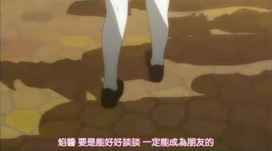
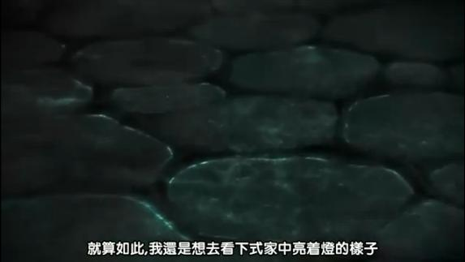
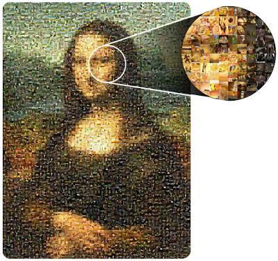

Education
Educational Informatics
Computer Science Education
Citizen Science
Politics
Open Government
NPO
Art
Art
http://en.wikipedia.org/wiki/Computer_art
http://en.wikipedia.org/wiki/Information_art
Tessellation
Voronoi Diagram是自然的圖案。卡通動畫裡面，也有人利用Voronoi Diagram來鋪地磚。
http://blog.controul.com/2009/05/speedy-voronoi-diagrams-in-as3flash/ http://nodename.com/blog/2009/05/18/mona-voronita/ 
馬賽克照片：用許多張照片拼湊「蒙娜麗莎的微笑」。使用兩兩配對的概念，先把《蒙娜麗莎的微笑》切成小格，每一小格與每一張照片計算相似度，選出最適當的照片。
Fractal
http://www.matrix67.com/blog/archives/6231
Julia Set、Mandelbrot Set、Dragon Curve、Space-filling Curve。
http://chaos.coa.edu/ http://mathcenter.ck.tp.edu.tw/Resources/Ctrl/ePaper/ePaperOpenFileX.ashx?autoKey=360 http://en.wikipedia.org/wiki/Logistic_map http://zh.wikipedia.org/wiki/File:Logistic_map_examples_small.gif http://en.wikipedia.org/wiki/Bifurcation_theory
http://algorithmicbotany.org/papers/ http://www.joesfer.com/?p=46
Tiling
http://tilings.math.uni-bielefeld.de/ http://en.wikipedia.org/wiki/Celtic_knot
Zoetrope
Fibonacci Sculpture。
Turtle Graphics
http://en.wikipedia.org/wiki/Turtle_graphics
一筆畫圖片。
Algorithm Visualization
http://bost.ocks.org/mike/algorithms/
Interactive Art
虛擬動物
Body Art
臉部投影